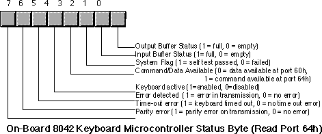
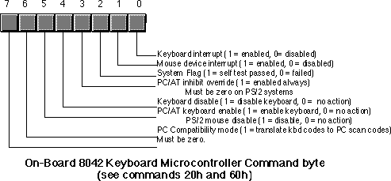

|
Table of Content | Chapter Twenty (Part 3) |
|
Table of Content | Chapter Twenty (Part 3) |
| CHAPTER TWENTY: THE PC KEYBOARD (Part 2) |
| 20.2 - The Keyboard Hardware Interface |
| 20.2 The Keyboard Hardware Interface |
IBM used a very simple hardware design for the keyboard port on the original PC and PC/XT machines. When they introduced the PC/AT, IBM completely resigned the interface between the PC and the keyboard. Since then, almost every PC model and PC clone has followed this keyboard interface standard. Although IBM extended the capabilities of the keyboard controller when they introduced their PS/2 systems, the PS/2 models are still upwards compatible from the PC/AT design. Since there are so few original PCs in use today (and fewer people write original software for them), we will ignore the original PC keyboard interface and concentrate on the AT and later designs.
There are two keyboard microcontrollers that the system communicates with - one on the PC's motherboard (the on-board microcontroller) and one inside the keyboard case (the keyboard microcontroller). Communication with the on-board microcontroller is through I/O port 64h. Reading this byte provides the status of the keyboard controller. Writing to this byte sends the on-board microcontroller a command. The organization of the status byte is

Communication to the microcontroller in the keyboard unit is via the bytes at I/O addresses 60h and 64h. Bits zero and one in the status byte at port 64h provide the necessary handshaking control for these ports. Before writing any data to these ports, bit zero of port 64h must be zero; data is available for reading from port 60h when bit one of port 64h contains a one. The keyboard enable and disable bits in the command byte (port 64h) determine whether the keyboard is active and whether the keyboard will interrupt the system when the user presses (or releases) a key, etc.
Bytes written to port 60h are sent to the keyboard microcontroller and bytes written to port 64h are sent to the on-board microcontroller. Bytes read from port 60h generally come from the keyboard, although you can program the on-board microcontroller to return certain values at this port, as well. The following tables lists the commands sent to the keyboard microcontroller and the values you can expect back. The following table lists the allowable commands you can write to port 64h:
| Value (hex) | Description |
|---|---|
| 20 | Transmit keyboard controller's command byte to system as a scan code at port 60h. |
| 60 | The next byte written to port 60h will be stored in the keyboard controller's command byte. |
| A4 | Test if a password is installed (PS/2 only). Result comes back in port 60h. 0FAh means a password is installed, 0F1h means no password. |
| A5 | Transmit password (PS/2 only). Starts receipt of password. The next sequence of scan codes written to port 60h, ending with a zero byte, are the new password. |
| A6 | Password match. Characters from the keyboard are compared to password until a match occurs. |
| A7 | Disable mouse device (PS/2 only). Identical to setting bit five of the command byte. |
| A8 | Enable mouse device (PS/2 only). Identical to clearing bit five of the command byte. |
| A9 | Test mouse device. Returns 0 if okay, 1 or 2 if there is a stuck clock, 3 or 4 if there is a stuck data line. Results come back in port 60h. |
| AA | Initiates self-test. Returns 55h in port 60h if successful. |
| AB | Keyboard interface test. Tests the keyboard interface. Returns 0 if okay, 1 or 2 if there is a stuck clock, 3 or 4 if there is a stuck data line. Results come back in port 60h. |
| AC | Diagnostic. Returns 16 bytes from the keyboard's microcontroller chip. Not available on PS/2 systems. |
| AD | Disable keyboard. Same operation as setting bit four of the command register. |
| AE | Enable keyboard. Same operation as clearing bit four of the command register. |
| C0 | Read keyboard input port to port 60h. This input port
contains the following values: bit 7: Keyboard inhibit keyswitch (0 = inhibit, 1 = enabled). bit 6: Display switch (0=color, 1=mono). bit 5: Manufacturing jumper. bit 4: System board RAM (always 1). bits 0-3: undefined. |
| C1 | Copy input port (above) bits 0-3 to status bits 4-7. (PS/2 only) |
| C2 | Copy input pot (above) bits 4-7 to status port bits 4-7. (PS/2 only). |
| D0 | Copy microcontroller output port value to port 60h (see definition below). |
| D1 | Write the next data byte written to port 60h to the
microcontroller output port. This port has the following definition: bit 7: Keyboard data. bit 6: Keyboard clock. bit 5: Input buffer empty flag. bit 4: Output buffer full flag. bit 3: Undefined. bit 2: Undefined. bit 1: Gate A20 line. bit 0: System reset (if zero). Note: writing a zero to bit zero will reset the machine. Writing a one to bit one combines address lines 19 and 20 on the PC's address bus. |
| D2 | Write keyboard buffer. The keyboard controller returns the next value sent to port 60h as though a keypress produced that value. (PS/2 only). |
| D3 | Write mouse buffer. The keyboard controller returns the next value sent to port 60h as though a mouse operation produced that value. (PS/2 only). |
| D4 | Writes the next data byte (60h) to the mouse (auxiliary) device. (PS/2 only). |
| E0 | Read test inputs. Returns in port 60h the status of the keyboard serial lines. Bit zero contains the keyboard clock input, bit one contains the keyboard data input. |
| Fx | Pulse output port (see definition for D1). Bits 0-3 of the keyboard controller command byte are pulsed onto the output port. Resets the system if bit zero is a zero. |
Commands 20h and 60h let you read and write the keyboard controller command byte. This byte is internal to the on-board microcontroller and has the following layout:

The system transmits bytes written to I/O port 60h directly to the keyboard's microcontroller. Bit zero of the status register must contain a zero before writing any data to this port. The commands the keyboard recognizes are
Value (hex) |
Description |
|---|---|
| ED | Send LED bits. The next byte written to port 60h updates
the LEDs on the keyboard. The parameter (next) byte contains: bits 3-7: Must be zero. bit 2: Capslock LED (1 = on, 0 = off). bit 1: Numlock LED (1 = on, 0 = off). bit 0: Scroll lock LED (1 = on, 0 = off). |
| EE | Echo commands. Returns 0EEh in port 60h as a diagnostic aid. |
| F0 | Select alternate scan code set (PS/2 only). The next byte
written to port 60h selects one of the following options: 00: Report current scan code set in use (next value read from port 60h). 01: Select scan code set #1 (standard PC/AT scan code set). 02: Select scan code set #2. 03: Select scan code set #3. |
| F2 | Send two-byte keyboard ID code as the next two bytes read from port 60h (PS/2 only). |
| F3 | Set Autorepeat delay and repeat rate. Next byte written to
port 60h determines rate: bit 7: must be zero bits 5,6: Delay. 00- 1/4 sec, 01- 1/2 sec, 10- 3/4 sec, 11- 1 sec. bits 0-4: Repeat rate. 0- approx 30 chars/sec to 1Fh- approx 2 chars/sec. |
| F4 | Enable keyboard. |
| F5 | Reset to power on condition and wait for enable command. |
| F6 | Reset to power on condition and begin scanning keyboard. |
| F7 | Make all keys autorepeat (PS/2 only). |
| F8 | Set all keys to generate an up code and a down code (PS/2 only). |
| F9 | Set all keys to generate an up code only (PS/2 only). |
| FA | Set all keys to autorepeat and generate up and down codes (PS/2 only). |
| FB | Set an individual key to autorepeat. Next byte contains the scan code of the desired key. (PS/2 only). |
| FC | Set an individual key to generate up and down codes. Next byte contains the scan code of the desired key. (PS/2 only). |
| FD | Set an individual key to generate only down codes. Next byte contains the scan code of the desired key. (PS/2 only). |
| FE | Resend last result. Use this command if there is an error receiving data. |
| FF | Reset keyboard to power on state and start the self-test. |
The following short program demonstrates how to send commands to the keyboard's controller. This little TSR utility programs a "light show" on the keyboard's LEDs.
; LEDSHOW.ASM
;
; This short TSR creates a light show on the keyboard's LEDs. For space
; reasons, this code does not implement a multiplex handler nor can you
; remove this TSR once installed. See the chapter on resident programs
; for details on how to do this.
;
; cseg and EndResident must occur before the standard library segments!
cseg segment para public 'code'
cseg ends
; Marker segment, to find the end of the resident section.
EndResident segment para public 'Resident'
EndResident ends
.xlist
include stdlib.a
includelib stdlib.lib
.list
byp equ <byte ptr>
cseg segment para public 'code'
assume cs:cseg, ds:cseg
; SetCmd- Sends the command byte in the AL register to the 8042
; keyboard microcontroller chip (command register at
; port 64h).
SetCmd proc near
push cx
push ax ;Save command value.
cli ;Critical region, no ints now.
; Wait until the 8042 is done processing the current command.
xor cx, cx ;Allow 65,536 times thru loop.
Wait4Empty: in al, 64h ;Read keyboard status register.
test al, 10b ;Input buffer full?
loopnz Wait4Empty ;If so, wait until empty.
; Okay, send the command to the 8042:
pop ax ;Retrieve command.
out 64h, al
sti ;Okay, ints can happen again.
pop cx
ret
SetCmd endp
; SendCmd- The following routine sends a command or data byte to the
; keyboard data port (port 60h).
SendCmd proc near
push ds
push bx
push cx
mov cx, 40h
mov ds, cx
mov bx, ax ;Save data byte
mov al, 0ADh ;Disable kbd for now.
call SetCmd
cli ;Disable ints while accessing HW.
; Wait until the 8042 is done processing the current command.
xor cx, cx ;Allow 65,536 times thru loop.
Wait4Empty: in al, 64h ;Read keyboard status register.
test al, 10b ;Input buffer full?
loopnz Wait4Empty ;If so, wait until empty.
; Okay, send the data to port 60h
mov al, bl
out 60h, al
mov al, 0AEh ;Reenable keyboard.
call SetCmd
sti ;Allow interrupts now.
pop cx
pop bx
pop ds
ret
SendCmd endp
; SetLEDs- Writes the value in AL to the LEDs on the keyboard.
; Bits 0..2 correspond to scroll, num, and caps lock,
; respectively.
SetLEDs proc near
push ax
push cx
mov ah, al ;Save LED bits.
mov al, 0EDh ;8042 set LEDs cmd.
call SendCmd ;Send the command to 8042.
mov al, ah ;Get parameter byte
call SendCmd ;Send parameter to the 8042.
pop cx
pop ax
ret
SetLEDs endp
; MyInt1C- Every 1/4 seconds (every 4th call) this routine
; rotates the LEDs to produce an interesting light show.
CallsPerIter equ 4
CallCnt byte CallsPerIter
LEDIndex word LEDTable
LEDTable byte 111b, 110b, 101b, 011b,111b, 110b, 101b, 011b
byte 111b, 110b, 101b, 011b,111b, 110b, 101b, 011b
byte 111b, 110b, 101b, 011b,111b, 110b, 101b, 011b
byte 111b, 110b, 101b, 011b,111b, 110b, 101b, 011b
byte 000b, 100b, 010b, 001b, 000b, 100b, 010b, 001b
byte 000b, 100b, 010b, 001b, 000b, 100b, 010b, 001b
byte 000b, 100b, 010b, 001b, 000b, 100b, 010b, 001b
byte 000b, 100b, 010b, 001b, 000b, 100b, 010b, 001b
byte 000b, 001b, 010b, 100b, 000b, 001b, 010b, 100b
byte 000b, 001b, 010b, 100b, 000b, 001b, 010b, 100b
byte 000b, 001b, 010b, 100b, 000b, 001b, 010b, 100b
byte 000b, 001b, 010b, 100b, 000b, 001b, 010b, 100b
byte 010b, 001b, 010b, 100b, 010b, 001b, 010b, 100b
byte 010b, 001b, 010b, 100b, 010b, 001b, 010b, 100b
byte 010b, 001b, 010b, 100b, 010b, 001b, 010b, 100b
byte 010b, 001b, 010b, 100b, 010b, 001b, 010b, 100b
byte 000b, 111b, 000b, 111b, 000b, 111b, 000b, 111b
byte 000b, 111b, 000b, 111b, 000b, 111b, 000b, 111b
byte 000b, 111b, 000b, 111b, 000b, 111b, 000b, 111b
byte 000b, 111b, 000b, 111b, 000b, 111b, 000b, 111b
TableEnd equ this byte
OldInt1C dword ?
MyInt1C proc far
assume ds:cseg
push ds
push ax
push bx
mov ax, cs
mov ds, ax
dec CallCnt
jne NotYet
mov CallCnt, CallsPerIter ;Reset call count.
mov bx, LEDIndex
mov al, [bx]
call SetLEDs
inc bx
cmp bx, offset TableEnd
jne SetTbl
lea bx, LEDTable
SetTbl: mov LEDIndex, bx
NotYet: pop bx
pop ax
pop ds
jmp cs:OldInt1C
MyInt1C endp
Main proc
mov ax, cseg
mov ds, ax
print
byte "LED Light Show",cr,lf
byte "Installing....",cr,lf,0
; Patch into the INT 1Ch interrupt vector. Note that the
; statements above have made cseg the current data segment,
; so we can store the old INT 1Ch values directly into
; the OldInt1C variable.
cli ;Turn off interrupts!
mov ax, 0
mov es, ax
mov ax, es:[1Ch*4]
mov word ptr OldInt1C, ax
mov ax, es:[1Ch*4 + 2]
mov word ptr OldInt1C+2, ax
mov es:[1Ch*4], offset MyInt1C
mov es:[1Ch*4+2], cs
sti ;Okay, ints back on.
; We're hooked up, the only thing that remains is to terminate and
; stay resident.
print
byte "Installed.",cr,lf,0
mov ah, 62h ;Get this program's PSP
int 21h ; value.
mov dx, EndResident ;Compute size of program.
sub dx, bx
mov ax, 3100h ;DOS TSR command.
int 21h
Main endp
cseg ends
sseg segment para stack 'stack'
stk db 1024 dup ("stack ")
sseg ends
zzzzzzseg segment para public 'zzzzzz'
LastBytes db 16 dup (?)
zzzzzzseg ends
end Main
The keyboard microcontroller also sends data to the on-board microcontroller for processing and release to the system through port 60h. Most of these values are key press scan codes (up or down codes), but the keyboard transmits several other values as well. A well designed keyboard interrupt service routine should be able to handle (or at least ignore) the non-scan code values. Any particular, any program that sends commands to the keyboard needs to be able to handle the resend and acknowledge commands that the keyboard microcontroller returns in port 60h. The keyboard microcontroller sends the following values to the system:
| Value (hex) | Description |
|---|---|
| 00 | Data overrun. System sends a zero byte as the last value when the keyboard controller's internal buffer overflows. |
| 1..58 81..D8 |
Scan codes for key presses. The positive values are down codes, the negative values (H.O. bit set) are up codes. |
| 83AB | Keyboard ID code returned in response to the F2 command (PS/2 only). |
| AA | Returned during basic assurance test after reset. Also the up code for the left shift key. |
| EE | Returned by the ECHO command. |
| F0 | Prefix to certain up codes (N/A on PS/2). |
| FA | Keyboard acknowledge to keyboard commands other than resend or ECHO. |
| FC | Basic assurance test failed (PS/2 only). |
| FD | Diagnostic failure (not available on PS/2). |
| FE | Resend. Keyboard requests the system to resend the last command. |
| FF | Key error (PS/2 only). |
Assuming you have not disabled keyboard interrupts (see the keyboard controller command byte), any value the keyboard microcontroller sends to the system through port 60h will generate an interrupt on IRQ line one (int 9). Therefore, the keyboard interrupt service routine normally handles all the above codes. If you are patching into int 9, don't forget to send and end of interrupt (EOI) signal to the 8259A PIC at the end of your ISR code. Also, don't forget you can enable or disable the keyboard interrupt at the 8259A.
In general, your application software should not access the keyboard hardware directly. Doing so will probably make your software incompatible with utility software such as keyboard enhancers (keyboard macro programs), pop-up software, and other resident programs that read the keyboard or insert data into the system's type ahead buffer. Fortunately, DOS and BIOS provide an excellent set of functions to read and write keyboard data. Your programs will be much more robust if you stick to using those functions. Accessing the keyboard hardware directly should be left to keyboard ISRs and those keyboard enhancers and pop-up programs that absolutely have to talk directly to the hardware.
|
Table of Content | Chapter Twenty (Part 3) |
Chapter Twenty: The PC Keyboard (Part
2)
29 SEP 1996